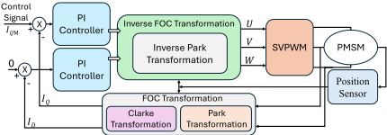
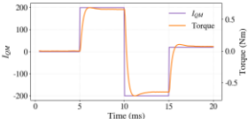

Safegen: LLM-Driven Assertion Generation and Fault Criticality Evaluation for Functional Safety
SafeGen：LLM 驱动的面向功能安全的断言生成与故障关键度评估
简介
论文针对传统基于功能激励的故障仿真只能按'故障能否传播到输出'做 safe/unsafe 二元分类、在模块级过度悲观，导致冗余设计、性能损失和测试开销增加的问题，提出 SafeGen 框架。该方法用 LLM 结合融合 FMEDA 指南的文档级 Hyper Knowledge Graph（HyperKG），从设计与安全文档中提取可验证 specification 并评估其系统安全重要性；再将 HyperKG 与 RTL CDFG 对齐，自动生成与 specification 关联、可追溯的 Functional Safety Assertions（FSA）；通过 gate-to-RTL 故障映射（支持 stuck-at 与 bridging fault）和 FPV，依据被违反断言所关联 specification 的重要性对故障做多级关键度分级。在 FOC 电机控制设计的数字-物理联合仿真验证中，SafeGen 检出功能故障仿真所检出 stuck-at 故障的 80.6%、bridging 故障的 82.6%，并揭示结构故障仿真将 34351 个 stuck-at 与 3894 个 bridging 故障误标为 unsafe；总运行时间 3.7 天，优于 5.5 天的故障仿真。
问题
传统基于功能激励的故障仿真将故障关键度视为二元分类（能否传播到至少一个功能输出），在模块级过度保守，把大量对系统功能无实际影响的故障标为 unsafe，触发不必要的安全加固；基于结构可观测性的 formal 方法无法捕捉故障对功能行为的语义影响；直接在门级做 formal 验证存在 COI 膨胀、收敛困难，而门级故障在 RTL 中缺乏一对一信号映射导致故障注入困难；此外高质量断言的人工编写耗时且难以扩展，模板/规则驱动方法难以捕捉高层语义与设计意图的上下文依赖。
方法
SafeGen 是 LLM 驱动、formal 验证辅助的故障关键度评估框架：（1）用 HyperGraphRAG 构建文档级 HyperKG，从 FMEDA 指南、安全文档和设计文档中提取实体与超边；通过 N 次独立推理 + embedding 余弦相似度聚类选取最一致簇实现稳定的 specification 提取，用 M 轮独立评分取中位数实现稳定的重要性赋分；（2）用 PyVerilog 提取 RTL CDFG，经模糊字符串匹配与文档级 HyperKG 对齐合并，按信号逐个生成 FSA，上下文来自 HyperKG BFS 探索与多 LLM 摘要，并建立断言-specification 的一对多映射实现语义追溯；（3）将 [34] 的 stuck-at gate-to-RTL 映射扩展到 bridging fault（wired-AND/wired-OR/dominant），通过 Boolean difference 计算故障激活条件并在 RTL 输出/寄存器处插入 MUX 建模故障效果；（4）用 FPV（JasperGold）在故障 RTL 上识别被违反的断言，按受影响 specification 的重要性给故障分配关键度。验证平台为 FOC 驱动 PMSM 的数字-物理联合仿真。
关键结果
SafeGen 检出功能故障仿真（ground truth）所检出 stuck-at 故障的 80.6%、bridging 故障的 82.6%
结构故障仿真检出的 34351 个 stuck-at 故障与 3894 个 bridging 故障在功能仿真中未造成任何系统错误，证明结构方法在故障关键度评估上过度悲观
断言质量对比中 SafeGen 在 #SVA、#SynC、#Proven（排除 vacuous proof）及 COI coverage 上优于 AssertLLM 与 AssertionForge，去除 HyperKG 导致明显性能下降（Table 1 具体数值未在正文中给出）
Specification 提取：15 次独立推理聚类为 4 簇（规模 10/2/2/1），最终得到 70 条 specification；重要性评分经 30 轮取中位数，所有评分标准差低于 1
运行时间：结构故障仿真 5.5 天 vs SafeGen 总计 3.7 天（HyperKG 构建 2 分钟、specification 提取与评分 20 分钟、断言生成 12.5 小时、gate-to-RTL 故障映射 6.7 小时、FPV 故障评估 3.1 天）
高关键度故障集中在 reset 正确性、PI 数值饱和与控制运算相关逻辑；多数故障呈低关键度，体现'needle in the haystack'识别能力
创新点
区别于基于激励的功能故障仿真和基于结构可观测性的 formal 故障识别，SafeGen 以 FSA+FPV 实现语义级、多级、可追溯的故障关键度分级，而非二元 safe/unsafe 分类；将 gate-to-RTL 故障映射从 stuck-at 扩展到 bridging fault，用 Boolean difference + MUX 建模在 RTL 上注入门级故障效果，控制 COI 膨胀并保持收敛；区别于 AssertLLM/AssertionForge 等 LLM 断言生成工作，其引入融合 FMEDA 指南的功能安全感知 HyperKG（超边表达多实体 n 元关系）、覆盖模块内部寄存器/连线而非仅端口信号，并建立断言-specification 追溯与重要性加权的关键度评分。
团队参考意义
相关度级别：high
命中能力域：2.5 功能安全与安全机制 | 2.6 Fault simulation/Z01X/TFMEA | 2.7 CyberSec/自动化
理由：论文直接命中 2.5 与 2.6 的核心技术：以 FMEDA 指南驱动的 specification 提取与重要性评分、基于 FSA+FPV 的故障关键度分级，正是团队 FuSa TFMEA/FMEDA 论证与 fault grading 工作的语义化升级；其用闭环功能故障仿真作为 ground truth 量化结构故障仿真悲观度的做法，与团队用 Z01X 做功能 pattern fault grading、补偿 ATPG coverage 与 detectability 分析的思路直接互补。LLM+HyperKG 的文档解析、多轮一致性聚合与断言自动生成流水线，可迁移到 2.7 的 Data Source 到 FMEDA/DFMEA 自动化及 AI 辅助流程。需注意论文验证载体是 FOC 电机控制而非存储/互连 IP，但方法论层面（断言-规格追溯、gate-to-RTL 故障映射、关键度分级）对团队完全可借鉴。
建议动作：深入精读并做内部分享
中文全文
arXiv:2606.25296v1 [cs.AR] 2026年6月24日
SafeGen: LLM-Driven Assertion Generation and Fault Criticality Evaluation for Functional Safety
Xuanyi Tan 1 , Arjun Chaudhuri 1 , Rubin Parekhji 2 , Krishnendu Chakrabarty 1
1 亚利桑那州立大学，美国亚利桑那州坦佩
2 德州仪器印度公司，印度卡纳塔克邦班加罗尔
{xtan58,Krishnendu.Chakrabarty}@asu.edu,arjuniitkgp7@gmail.com,parekhji@ti.com
仍被标记为不安全，从而触发与真正关键节点相同的安全强化措施。这种保守策略会导致冗余设计、性能损失和测试开销的增加。因此，仅基于可观测性来评估故障关键性是不充分的，这一点将在第 4.5.2 节中进一步讨论。一种有效的策略是借助一个能够从功能语义角度解释故障效应的框架，根据故障的功能影响在多个层次上评估其重要性。
传统的基于功能输入激励的故障仿真方法无法从功能语义角度有效地进行多层次故障分类 [4, 6]。这是因为输入激励很少能明确地映射到电路功能，而建立此类映射需要大量的人工工作，使得该过程对于大型设计而言并不切实际。相比之下，功能安全断言（Functional Safety Assertions, FSAs）天然地编码了功能语义。FSAs 是旨在验证设计在故障条件下的鲁棒性和行为完整性的断言。其目的在于识别会导致功能失效的故障，从而为故障分类提供客观证据。这些断言采用形式化属性验证（Formal Property Verification, FPV）进行评估，FPV 无需依赖仿真激励即可探索所有可达的设计状态。图 1 展示了故障仿真与 FPV 在故障关键性评估方面的区别。通过在故障注入后分析断言违例，并根据相关联规范的重要性对其进行加权，能够以更细的粒度对故障进行评估。
开发高质量断言需要人工解读规范、识别与安全相关的行为，并将其形式化为精确的属性。对于复杂设计而言，这一过程耗时且难以扩展 [11]。基于模板或规则驱动的断言生成框架可以实现这一过程的自动化，但它们难以捕捉高层语义以及设计意图与功能行为之间的上下文依赖关系 [21, 31]。大语言模型（LLMs）的最新进展为应对这一挑战提供了新的机遇。凭借强大的语义推理能力，LLMs 能够联合分析设计文档与寄存器传输级（RTL）代码，从中提取设计意图和功能语义，从而自动生成有意义的 SystemVerilog 断言（SVAs）。近期研究已经证明了 LLMs 在生成通用断言和安全相关断言方面的有效性，减少了人工工作量并提升了覆盖率 [5, 7, 26, 33, 35, 36, 39, 42]。例如，AssertionForge 构建了基于知识图谱的上下文检索机制，以捕捉规范与 RTL 之间的依赖关系，进一步提升了断言生成中的语义准确性 [7, 23]。
本文提出 SafeGen，这是一个故障关键性评估框架，它将 LLMs 的语义推理与形式化属性验证（FPV）相结合，以实现细粒度、可追溯且可解释的故障关键性评估。LLMs 利用文档级超知识图谱（Hyper Knowledge Graph, HyperKG）从安全文档和设计文档中提取可验证的规范，同时评估这些规范对系统安全的重要性。在 SafeGen 中，HyperKG 通过 RTL 控制数据流得到扩展
Abstract
随着自动驾驶与电动汽车技术的发展，功能安全已成为汽车芯片设计的一项关键要求。传统的基于仿真的故障分析在模块层面往往过于保守，无法反映真实的故障关键性。本文提出 SafeGen，一个由大语言模型（LLM）驱动、形式化验证辅助的面向功能安全的故障关键性评估框架。SafeGen 采用大语言模型（LLM）与文档级超知识图谱（Hyper Knowledge Graph, HyperKG），该图谱融入了失效模式、影响与诊断分析（FMEDA）指南，用于从设计文档和安全文档中提取可验证的规范，并评估这些规范对整体系统安全的重要性。随后，HyperKG 通过寄存器传输级（RTL）信息得到扩展，以指导生成语义有据且感知设计的功能安全断言（Functional Safety Assertions, FSA），每条断言都与其对应的规范相关联，从而实现可追溯的推理。一种支持固定型（stuck-at）故障与桥接（bridging）故障的门级到 RTL 故障映射机制，结合形式化属性验证（FPV），能够基于与规范关联的断言违例实现语义层面的故障关键性分级。一个面向磁场定向控制（FOC）系统的数字-物理协同仿真平台对 SafeGen 进行了验证，结果表明其断言质量优于其他基于 LLM 的断言生成框架。与传统的基于仿真的方法相比，该框架还在故障关键性评估中提供了语义可解释性。
1 Introduction
The growing adoption of autonomous driving and electric vehicle technologies continuously increases the complexity of in-vehicle electronic systems. Ensuring safe operation under fault conditions is a formidable challenge. Standards such as ISO 26262 define a unified framework for detecting and managing hardware faults. Their main objective is to ensure that a system maintains a safe operational state even in the presence of faults [2, 30, 32]. In the shift-left paradigm, early identification of fault impacts enables timely design-phase countermeasures, thereby improving system reliability [24]. To this end, fault simulation and formal methods are employed to evaluate whether a fault can propagate to functional outputs, thus assessing its potential to induce safety risks. These approaches treat fault criticality as a binary classification problem, considering a fault either safe or unsafe depending on whether its effect can be propagated to at least one functional output [8-10].
At the system level, binary fault classification is reasonable, as faults observable at system outputs typically indicate violations of functional safety [8]. However, when applied to the module level, this approach becomes overly pessimistic. Because modules differ in failure modes and functional roles, similar fault propagation patterns can lead to different risks under varying contexts [16, 17]. For example, a fault in an auxiliary counter may propagate to the output under specific input stimuli but have little impact on the main control loop. Under the binary classification scheme, such a fault is graph (CDFG) to guide FSA generation, allowing the LLM to capture global safety and functional semantics and their correspondence to RTL structures. The generated assertions are linked to the extracted specifications for semantic traceability. A gate-to-RTL fault mapping is used to analyze gate-level fault effects at the RTL level, supporting both stuck-at and bridging faults. FPV evaluates injected faults by identifying the violated assertions. With the established mapping between assertions and specifications, each fault is then assigned a criticality based on the importance of the affected specifications. The proposed framework is validated on a field-oriented control (FOC) design [41] using a digital-physical co-simulation platform and custom functional safety documents that we have developed. This validation flow demonstrates the effectiveness of the proposed framework in realistic safety-critical scenarios. The proposed approach bridges the abstraction gap between low-level fault analysis and high-level functional semantics, establishing a direct correspondence between properties and gate-level faults.

The key contributions of this paper are as follows:
2.1 Fault Simulation
基于仿真的故障分析已被广泛用于故障关键性评估，但其存在二分类局限和高计算成本的问题 [10]。为了提高效率，近期工作采用在故障仿真数据上训练的神经网络 [12-15, 22, 37]。尽管这些方法能够实现快速推理，但它们依赖于仿真标签，且缺乏对功能语义的感知。
2.2 Formal Methods
现有的基于形式化验证的故障识别技术侧重于结构层面的检测；其通过构建无故障机器与故障机器，并分析二者的输出差异来识别可观测故障 [9, 19, 20, 40, 43]。然而，这些方法仍局限于结构可观测性，无法捕捉故障对功能行为产生的语义影响，而这些影响对于功能安全评估至关重要。直接在门级网表上执行形式化验证能够实现精确的故障定位，但会增加验证复杂度。诸如寄存器传输级（RTL）等高层抽象会被细化为大量逻辑门，从而显著扩大影响锥（COI），使形式化验证引擎难以收敛 [18]。为缓解这一可扩展性问题，验证通常被提升至 RTL 抽象层级进行。然而，这一转换引入了新的挑战：门级故障的位置在 RTL 中往往缺乏一一对应的信号映射，导致精确的故障注入变得困难。在本工作中，门级故障的影响被映射至 RTL 信号，并针对 FSA 进行验证，从而在控制 COI 扩张并保持收敛性的同时，实现具有语义意义的故障关键性评估。
2.3 LLM-Based Assertion Generation
基于大语言模型（LLM）的断言生成框架采用多 LLM 协作方式，将子任务分配给专用的 LLM [5, 7, 26, 33, 35, 36, 39, 42]。例如，AssertLLM 采用多个 LLM 来解析设计文档并生成 SystemVerilog 断言（SVA）[42]。AssertionForge 构建了将设计文档与 RTL 图相整合的统一知识图谱（KG）以生成断言[7]。然而，该方法仅针对模块级端口信号，而忽视了对功能安全至关重要的内部寄存器与连线。此外，其过于简化的 KG 表示限制了捕捉设计文档中多实体交互与上下文依赖的能力。
2.4 HyperKG
HyperGraphRAG [28] 解决了基于图的检索增强生成（RAG）方法仅能建模二元关系的局限性。该方法引入了 HyperKG，其中超边用于捕捉多个实体之间的 n 元关系，从而实现统一的检索与生成，提升了 LLM 的推理准确性。对于设计功能与安全文档而言，这种超图结构尤为适用，因为模块的安全行为往往取决于其内部组件（如状态机、通信协议和数据通路）之间的联合交互。通过将这些多实体关系表示为连接内部机制与相关信号的超边，超图使断言生成能够同时兼顾局部结构细节与全局功能及安全意图。在本工作中，我们利用一种功能安全感知的 HyperKG 来增强 LLM 生成 FSAs 的推理能力。
3.1 Overview
图 2 展示了多层次故障关键性评估的框架。我们从设计文档中识别并提取规格说明，并评估其系统级重要性。随后，针对 RTL 信号自动生成 FSA，并将每条 FSA 与其对应的规格说明相关联，以建立语义可追溯性。接着，将门级故障效应映射到 RTL，并在含故障的 RTL 上执行形式化属性验证（FPV）以评估故障关键性。
SafeGen：面向功能安全的 LLM 驱动断言生成与故障关键性评估

3.2 LLM-Based Specification Extraction and Importance Assignment
由于故障关键性取决于受影响规格说明的重要性，因此大语言模型（LLM）生成的规格说明及其重要性评分的一致性、鲁棒性和可靠性对于确保评估结果可信至关重要。由于 LLM 响应存在固有的不确定性，尤其是对于 GPT-5 这类温度参数无法调节的推理模型，LLM 的单次响应可能并不可靠 [3]。我们采用一种系统化的预处理与后处理方法，引导 LLM 提取高质量、结构良好且重要性赋值稳定的规格说明，从而为故障关键性分析建立可信的语义基础。
3.2.1 文档级 HyperKG 构建。我们使用 HyperGraphRAG 作为预处理技术来降低 LLM 响应的不确定性。该技术的基础是我们的文档级 HyperKG，其构建始于利用 LLM 从失效模式、影响与诊断分析（FMEDA）指南、安全文档和设计文档中提取实体与超边。实体根据一个自定义模式（schema）进行定义和提取，该模式涵盖功能、结构与安全相关概念，例如端口、有限状态机、安全状态和安全等级。超边则基于这些实体之间的关系自动识别，以捕捉它们在文档中的语义依赖关系。该过程生成一个文档级超图。所有实体和超边均被嵌入到高维向量空间中，以便在检索增强生成（RAG）过程中支持用于规格说明提取和重要性评分的向量查询。此外，每个实体和超边还在属性字段中存储其文本描述，以便为 FSA 生成提供上下文信息。
3.2.2 规格说明提取。在规格说明提取过程中，我们采用文档级 HyperKG 来执行检索增强生成（RAG）。SafeGen 自动从安全文档和设计文档中提取所有可验证的功能、性能、接口和安全规格说明。提取过程被设计为一个可靠的 LLM 推理流水线，以确保所生成规格说明的统计一致性与可信性。为约束模型行为，我们采用一种独立的多轮推理机制，即由 LLM 对相同的输入配置处理 𝑁 次。每次推理产生一个候选规格说明集合 𝑆 𝑖 以及一个自评估的完整性置信度 𝐶 𝑖 ∈ [ 0 , 1 ]，该置信度反映模型认为其输出覆盖文档中所有相关规格说明的程度。候选结果被解析为标准格式，以构成集合 {( 𝑆 𝑖 , 𝐶 𝑖 )}。随后应用嵌入模型来量化这 𝑁 个生成集合之间的语义相似度。每个 𝑆 𝑖 被转换为高维向量表示，并计算余弦相似度矩阵 𝐷 𝑠。对应的距离矩阵 𝐷 = 1 - 𝐷 𝑠 经过凝聚聚类（平均链接）处理，以识别语义上最一致的簇。在该簇中，选取置信度 𝐶 𝑖 最高的样本作为最终的规格说明集合。
3.2.3 规格说明的重要性分配。在规格说明的重要性分配方面，我们的目标是定量评估每条规格说明对整体系统功能与安全的贡献，具体做法是利用断言验证局部功能行为的能力，并通过语义推理将这些局部属性映射到系统级的功能与安全语义。为获得稳定可靠的评估结果，采用了一种统计聚合方法。在后处理阶段，LLM 在相同输入下执行 𝑀 轮独立评分，产生完整的分数集合 { 𝐼 𝑖,𝑗 }，其中 𝐼 𝑖,𝑗 表示第 𝑗 条规格说明在第 𝑖 次推理中的重要性分数。经过 𝑀 轮之后，每条规格说明 𝑗 的最终重要性分数被确定为其各独立生成分数的中位数，即 ˜ 𝐼 𝑗 = median ( 𝐼 1 , 𝑗 , 𝐼 2 , 𝑗 , . . . , 𝐼 𝑀,𝑗 )。
3.3 FSA Generation
3.3.1 文档级 HyperKG 增强。为了将从文档中提取的安全与功能语义关联到 RTL 结构上，并提升断言生成的质量，我们将文档级 HyperKG 与 RTL CDFG 合并，构成一个增强的 HyperKG。CDFG 使用 PyVerilog [38] 从 RTL 中提取，其节点和边通过存储在属性字段中的结构描述进行标注。随后，应用模糊字符串匹配 [7] 来对齐文档级超图与 RTL CDFG 之间语义相关的实体。匹配到的节点被连接起来，形成一个统一的 HyperKG，将文档中的功能与安全语义同 RTL 设计的结构依赖关系关联起来。图 3 以复位控制逻辑为例，展示了文档级超图与 RTL CDFG 之间的对齐过程。文档指出，在系统复位时，所有控制寄存器必须被清零，且系统必须进入安全空闲状态。LLM 提取器识别出复位事件、寄存器初始化、安全空闲模式以及意外激活防护等关键实体，并将它们连接为一条表示其因果安全关系的超边。RTL 分析则定位到对应的节点，包括 rst、control_reg 和 mode 信号。随后，这些语义实体与结构节点通过模糊字符串匹配实现对齐。
3.3.2 上下文检索与增强。在 SafeGen 中，FSA 是针对每个信号逐一生成的。在为给定信号生成断言之前，该框架从两个互补的来源构建其上下文：基于 HyperKG 的图探索和多 LLM 摘要。对于 HyperKG 探索，从目标信号对应的节点出发，按照预定义的跳数限制 ℎ 执行广度优先搜索（BFS）。该搜索收集 ℎ 跳范围内的所有相邻节点及其关联的超边。从这些节点及其对应超边的属性中提取文本描述并进行聚合，以构建源自 HyperKG 的上下文。与此同时，多个基于 LLM 的摘要器从 FMEDA 指南、安全文档和设计文档中提取语义信息，生成关于设计级和信号级功能与安全意图的简洁描述。最后，将由 HyperKG 探索和 LLM 摘要获得的上下文组合起来，为 LLM 提供统一且语义丰富的上下文，随后 LLM 为每个信号生成相应的 FSA。

3.3.3 断言-规格说明映射。我们使用 LLM 来识别断言与规格说明之间的映射关系，其中一条断言可以与多条规格说明相关联。这种一对多的关系使得能够跨不同的功能与安全需求对故障影响进行全面的语义追踪。
3.4 Gate-Level Fault Effect Mapping to RTL
The proposed fault mapping builds upon the approach in [34], which computes Boolean differences and performs fault injection at the RTL level using multiplexer-based modeling. However, [34] mainly focuses on stuck-at faults, whereas functional safety evaluation also requires analyzing bridging faults arising from physical coupling [1, 25]. In this work, we extend the above mapping method to support bridging fault analysis.
Typical bridging faults include wired-AND, wired-OR, and dominant bridging faults. To represent bridging fault effects at the RTL level, the abstract bridging fault model must first be converted into a logically equivalent structure, from which a fault-injected netlist can be obtained. For wired-AND (wired-OR) faults, this is achieved by disconnecting the victim and aggressor nets and feeding them into an AND (OR) gate, whose output drives all fan-out nodes of the two original nets. For dominant bridging faults, the victim net is disconnected, and the aggressor net directly drives all fan-out nodes originally driven by the victim.
For each bridging fault, the set of primary outputs or registers within the combined fan-out cone of the aggressor and victim nets is defined as 𝑂 = { 𝑂 1 , 𝑂 2 , . . . , 𝑂 𝑗 } , where each 𝑂 𝑗 in the gate-level netlist directly corresponds to an RTL primary output or register. For each 𝑂 𝑗 ∈ 𝑂 , the corresponding fan-in cone is extracted from both the fault-free and faulty netlists, yielding two Boolean functions 𝑂 ff 𝑗 = 𝑓 ff ( 𝐼 ff 1 , 𝐼 ff 2 , . . . , 𝐼 ff 𝑚 ) and 𝑂 ft 𝑗 = 𝑓 ft ( 𝐼 ft 1 , 𝐼 ft 2 , . . . , 𝐼 ft 𝑛 ) , where 𝐼 ff 𝑚 and 𝐼 ft 𝑛 denote the primary inputs or registers in the fan-in cone of 𝑂 𝑗 in the fault-free and faulty netlists, respectively. Because a bridging fault alters signal dependencies, the two Boolean functions 𝑓 ff (·) and 𝑓 ft (·) are not logically identical. The Boolean difference between the fault-free and faulty outputs is defined as Δ 𝑂 𝑗 = 𝑂 ff 𝑗 ⊕ 𝑂 ft 𝑗 . When Δ 𝑂 𝑗 = 1, a logical deviation occurs at the output 𝑂 𝑗 , indicating that the fault effect is activated. When Δ 𝑂 𝑗 = 0, the output behavior remains identical to the fault-free case. After deriving the Boolean difference expression of Δ 𝑂 𝑗 , the fault effect can be mapped to the RTL to construct the faulty design. Fig. 4 illustrates the mapping of a wired-AND fault from the gate-level netlist to the RTL. This mapping is realized by inserting a multiplexer (MUX) at the corresponding RTL primary output or register. The MUX models the activation of the bridging fault: its select signal is driven by Δ 𝑂 𝑗 , which determines whether the fault effect is activated or the normal signal is preserved. The MUX output 𝑂 ′ 𝑗 represents the RTL signal that reflects both the fault-free and faulty behaviors, depending on the selection controlled by Δ 𝑂 𝑗 .

为保持逻辑一致性，RTL 中的信号引用必须相应更新：右侧所有出现的 𝑂 𝑗 均被替换为 𝑂 ′ 𝑗。通过这一过程，桥接故障的激活与传播行为可以在 RTL 层级得到准确建模，为后续的形式验证与故障关键性分析奠定基础。
4.1 Experimental Setup
在我们的研究中，所有固定型故障（stuck-at fault）均利用网表的图表示进行提取，并对等效故障进行了折叠。对于桥接故障，使用 Synopsys IC Compiler 提取物理版图，并从 Synopsys StarRC 报告中获取耦合电容。故障列表由 Synopsys TestMAX 生成。导致组合逻辑环路的桥接故障被移除。形式属性验证（FPV）使用 Cadence JasperGold 执行，而用于基线比较的故障仿真则使用 Cadence Xcelium 进行。故障仿真和 FPV 在一台采用 AMD EPYC 7313 处理器、配备 32 个物理核心（64 线程）的工作站上进行。基于广度优先搜索（BFS）的 HyperKG 探索的跳数限制 ℎ 设置为 5。所有基于大语言模型（LLM）的实验均在 GPT-5 上进行。
4.2 Design and Document Preparation
4.2.1 Setup Checklist . In this work, an open-source FOC design is adopted as the evaluation target [41]. Since the repository provides only the RTL code, we develop a physical motor model along with safety and design documentation to enable closed-loop motor simulation and safety-critical scenario analysis.
SafeGen: LLM-Driven Assertion Generation and Fault Criticality Evaluation for Functional Safety


4.2.2 Design Overview . The system adopts an FOC-based control method to drive a Permanent Magnet Synchronous Motor (PMSM); see Fig. 5. It consists of a digital control subsystem and a physical motor subsystem. The digital subsystem acquires current and rotor-angle signals, performs Clarke and Park transformations, executes Proportional-Integral (PI) regulation, and generates threephase Pulse-Width Modulation (PWM) signals via Space-Vector PWM(SVPWM) [27, 29]. The physical subsystem, represented by the PMSM, receives these PWM signals and provides current and position feedback, forming a closed-loop current control that ensures stable torque regulation.
4.2.3 Modeling and Simulation . The physical model includes an inverter model, a PMSM electrical model, a mechanical dynamics model, and a position sensor model. The three-phase PMSM has seven pole pairs and is driven by a 24 V DC bus. Its key electrical and mechanical parameters are as follows: phase resistance 0.5 Ω , inductance 0.4 mH, flux linkage 0.03 Wb · turn, rotor inertia 0.002 kg · m 2 , viscous friction 0.0005 N · m · s, and load torque 0.02 N · m. The system employs an 𝐼 𝐷 = 0 FOC strategy, using the quadrature-axis current 𝐼 𝑄 M to regulate motor torque. Figure 6 shows the current and torque waveforms from the closed-loop simulation. When 𝐼 𝑄 M > 0, the motor produces positive torque for propulsion; when 𝐼 𝑄 M < 0, it generates negative torque for braking. The results indicate good dynamic response and stable steady-state performance.
4.2.4 文档准备。所开发的设计文档描述了系统的整体功能、模块操作、接口、状态机以及其他设计细节。为了得到功能安全文档，执行了寄存器传输级（RTL）固定型故障仿真。通过监测电机转矩的变化来评估每个注入故障的影响。当转矩偏差超过其标称值的 ±10% 时，该故障被视为关键故障。该阈值源自系统的功能行为，并作为本次分析的安全目标。所有注入的故障根据其对系统的影响被划分为两类：（1）安全故障，即不会引起可观测转矩偏差的故障；（2）不安全故障，即导致偏差超出 ±10% 阈值的故障。此类故障仿真使得能够对设计的故障脆弱性进行定量评估，并揭示出哪些寄存器或逻辑模块对转矩稳定性具有最显著的影响。所有这些信息均被纳入功能安全文档中，该文档为 LLM 提供用于提取安全需求和生成功能安全断言（FSA）的语义与结构上下文。需要注意的是，RTL 级故障仿真仅用于构建功能安全文档，并不参与后续的门级故障关键性评估。
4.3 Assertion Quality Evaluation
为了评估我们框架所生成的功能安全断言（FSA）的质量，我们将其性能与 AssertLLM 和 AssertionForge [7, 42] 进行比较。为了进行公平比较，两个基线方法的提示词均经过调整以强调功能安全。由于 AssertionForge 仅支持模块端口信号，因此比较仅限于这些信号。我们使用表 1 中总结的多个评估指标。采用 Cadence JasperGold 来测量生成的断言总数（#SVA）、语法正确的断言数（#SynC）以及形式化验证通过的断言数（#Proven），其中不包括空洞证明。进一步使用 JasperGold 的基于 COI 的模型（Functional、Branch、Statement 和 Toggle）分析已证明断言的 COI 覆盖率。消融实验研究了移除 HyperKG 对 SafeGen 断言质量的影响。我们还展示了用于故障评估的断言，这些断言不仅针对模块端口生成，还针对每个模块内的所有内部信号生成。难以收敛的断言已从评估集中移除。结果表明，SafeGen 在断言质量方面优于两个基线方法，而移除 HyperKG 会导致性能明显下降。
4.4 LLM Reliability in Specification Extraction and Importance Assignment
按照第 3.2 节中的流程，推理管线被应用于同一设计文档，共进行 15 次独立运行（𝑁 = 15），每次运行产生一个带有置信度 𝐶 𝑖 的规范集 𝑆 𝑖。计算所有 𝑆 𝑖 之间的余弦相似度，并采用凝聚聚类（平均链接，阈值 = 0.05）将相似度高于 0.95 的样本归为一组。该过程得到四个簇，其规模分别为 10、2、2 和 1。主导簇（10 个样本）展现出向稳定规范表示的强收敛性。该簇中 𝐶 𝑖 最高的样本产生 70 条最终规范，用于下游的故障关键性分析。每条规范的重要性评分范围为 0（影响可忽略）至 4（系统级关键故障）。为确保稳定性，LLM 执行 𝑀 = 30 轮独立评分，每条规范的最终重要性评分取为各轮运行结果的中位数。我们观察到所有规范重要性评分的标准差均低于 1，这表明多次评估之间具有高度一致性。
4.5 Gate-Level Fault Criticality Analysis
| Model. | #SVA. | #SynC. | #Proven. | COI Coverage (%).Statement | COI Coverage (%).Branch | COI Coverage (%).Functional | COI Coverage (%).Toggle |
|---|---|---|---|---|---|---|---|
| AssertLLM [42] | 424 | 313 | 83 | 66.59 | 66.99 | 65.05 | 56.2 |
| AssertionForge [7] | 667 | 460 | 105 | 66.75 | 67.02 | 66.13 | 62.31 |
| SafeGen | 976 | 745 | 250 | 83.68 | 83.73 | 83.83 | 84.48 |
| SafeGen w/o HyperKG | 625 | 459 | 170 | 66.55 | 66.96 | 64.53 | 53.25 |
| SafeGen for fault evaluation | 8541 | 7243 | 1748 | 100 | 100 | 99.93 | 99.6 |
| Model. | #SVA. | #SynC. | #Proven. | COI Coverage (%).Statement | COI Coverage (%).Branch | COI Coverage (%).Functional | COI Coverage (%).Toggle |
| Method | Bridging faults.# Detected | Bridging faults.# Total collapsed | Stuck-at faults.# Detected | Stuck-at faults.# Total collapsed |
|---|---|---|---|---|
| Structural simulation Functional simulation SafeGen | 4688 (1767)* 794 (656) 2287 | 16495 | 39240 (12441)* 4889 (3940) 18869 | 183346 |
| Method | Bridging faults.# Detected | Bridging faults.# Total collapsed | Stuck-at faults.# Detected | Stuck-at faults.# Total collapsed |
A fault is labeled unsafe if its effect propagates to outputs. This approach represents a typical method for fault grading, focusing solely on whether a fault can be propagated to observable outputs. The second setup is functional fault simulation, which serves as a ground truth reference. It is performed in a closed-loop configuration, where control input 𝐼 𝑄𝑀 is adjusted to regulate motor current. During simulation, we monitor whether the motor torque deviation under faults exceeds ± 10% of the nominal value. Faults causing deviations beyond this threshold are classified as safety-critical, as they lead to system errors. While functional fault simulation provides accurate assessment of fault criticality by capturing real system behavior, it cannot serve as a baseline. This is because safety verification is performed before system integration and the selection of physical components such as the motor and load, making closed-loop functional fault simulation infeasible at the stage when fault grading is most needed. Therefore, we employ functional fault simulation as a reference to: (a) validate SafeGen's detection accuracy, and (b) quantify the pessimism of structural fault simulation, which tends to conservatively label faults as unsafe.
Table 2 lists the number of detected bridging and stuck-at faults across the three methods. The fault coverage is relatively low because the simulations are driven by functional, rather than test patterns. Note that faults not included in the 'detected' list in Table 2 are not important for functional safety. Unlike dedicated fault-detection assertions, SafeGen employs FSAs to evaluate the criticality of faults rather than to maximize coverage. SafeGen detects 80.6% of the stuck-at faults and 82.6% of the bridging faults detected by the functional fault simulation, demonstrating that its assertions effectively capture faults that lead to system errors. Notably, 3894 bridging faults and 34351 stuck-at faults detected by structural fault simulation did not result in any system errors in the functional simulation. As a result, although many faults are detected at the outputs of the digital subsystem and labeled as unsafe, most have no impact on the torque control of the FOC-based motor drive system, indicating that the structural fault simulation is overly pessimistic in assessing fault criticality.
图 7 展示了 SafeGen 评估得到的故障关键性分布。在高关键性故障中，大多数与复位正确性、PI 数值饱和以及控制算术运算相关。这些组件对于维持闭环电机控制系统的稳定性至关重要，这些区域中的故障可能使电流环失稳并导致不安全的电压电平。相比之下，低关键性故障主要影响时序或可观测性，而不会显著影响系统稳定性。正如预期的那样，大多数故障表现出低关键性；因此 SafeGen 有效地解决了识别“大海捞针”式关键故障这一难题。此外，每个故障的关键性都可以直接追溯到其违反的规范，为工程师进行设计改进和功能安全提升提供了明确的指导。

4.6 Efficiency Analysis
我们比较了结构故障仿真基线与 SafeGen 在固定型故障（stuck-at fault）上的运行时间。故障仿真的运行时间由两部分组成：其一是测试平台的准备工作，这是一项人工任务，因此无法以执行时间衡量；其二是故障仿真本身，需要 5.5 天才能完成。对于 SafeGen，HyperKG 的构建需要 2 分钟，规范提取与评分需要 20 分钟，断言生成需要 12.5 小时，门级到 RTL 的故障映射需要 6.7 小时。基于形式化属性验证（FPV）的故障评估需要 3.1 天。故障到 RTL 的映射以及其他基于大语言模型（LLM）的处理过程可以并行执行，因此总运行时间为 3.7 天。总体而言，SafeGen 的效率明显优于故障仿真。
5 Conclusion
我们提出了一种由大语言模型（LLM）驱动、形式化验证辅助的功能安全故障关键性评估框架。我们构建了 HyperKG 来组织提取的规范、评估其重要性，并通过增强对设计与安全语义的理解来支持生成高质量的功能安全断言（FSA）。我们将门级到 RTL 的故障映射与形式化属性验证（FPV）相集成，以弥合底层故障分析与高层功能语义之间的鸿沟。我们为磁场定向控制（FOC）系统开发了一个数字-物理协同仿真环境，并编制了功能安全与设计文档以验证我们的框架。结果表明，SafeGen 生成的断言质量优于现有的基于 LLM 的框架。其语义级故障关键性评估达到了很高的准确率，且每个故障的关键性均可追溯至具体的功能与安全规范。